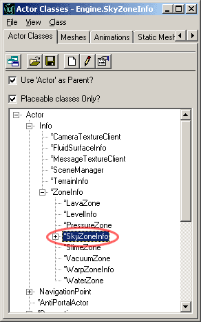
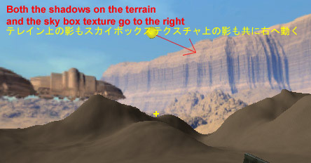
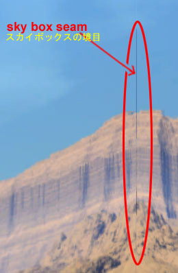
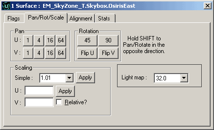

UDN
Search public documentation:
ExampleMapsSkyZonesJP
English Translation
Interested in the Unreal Engine?
Visit the Unreal Technology site.
Looking for jobs and company info?
Check out the Epic games site.
Questions about support via UDN?
Contact the UDN Staff
Interested in the Unreal Engine?
Visit the Unreal Technology site.
Looking for jobs and company info?
Check out the Epic games site.
Questions about support via UDN?
Contact the UDN Staff
スカイゾーン
本書の変更記録：最終更新 Jason Lentz (Main.DemiurgeStudios)、新規作成。オリジナル作成者 Jason Lentz(Main.DemiurgeStudios)。はじめに
本書ではスカイボックス、スカイシリンダ、天球を含むさまざまなスカイゾーンを作成する方法、および、スカイゾーン中のジオメトリやテクスチャのパーンなどのさまざまな効果について説明します。本書の最後では本書で使用するサンプルがダウンロードできます。基本的なスカイボックスの設定
スカイゾーンを作成するには、実際には BSP ゾーンの表面全体をFake Backdrop(フェイク背景)に設定し、その中で別のゾーンをスカイゾーン情報に設定するだけです。_質の良い_ スカイゾーンを作成するには、高い芸術性と Unreal Editor の補助機能が多少使用できることが必要です。このセクションでは、できる限り最高のスカイボックスを作成するプロセスを順を追って説明します。レベルの設定
スカイゾーンを設置する前にまず最初に、すべての BSP の表面を選択して、レベルに「空」を作成する必要があります、あるいは、どの表面でもよいのでその面を通してスカイゾーンを見たい表面に「空」を作成します。このプロセスを簡単にするは、減算したボリュームが1つしかない場合は、1つの表面をクリックして、[Ctrl + B] で残りの表面を選択します。すべての表面を選択したら、表面プロパティ ウィンドウをオープンし(表面プロパティのホットキー = [F5])、すべてをFake Backdrop(フェイク背景)に設定します。 また、これによりサンライト アクタがレベルにに照明を投影することもがきます。そうしなければ内側全体に、外側の BSP ボリュームが大きな影を投影します。
また、これによりサンライト アクタがレベルにに照明を投影することもがきます。そうしなければ内側全体に、外側の BSP ボリュームが大きな影を投影します。
スカイゾーン情報の設置
これでスカイゾーンを設置する準備ができました。減算した BSP ボリュームの外側に落ちたレベルの部分を捜し、別の減算した BSP ボリュームを作成する。このボリュームはそれほど大きい必要はなく、自分のゾーンにだけ必要で、レベルの空で (つまり、Fake Backdrop(フェイク背景)として設定した表面を通して) ブロックされた視線すべてに必要な訳ではありません。アクタブラウザでスカイゾーン情報を選択して、この新しいゾーン内にスカイゾーン情報を設置します。スカイゾーン情報をスカイボックスの空の地平線と同じ高さで、トップダウンビューから、直接中央に設置していることを確かめてください。
ここでゲームを実行すると、Fake Backdrop(フェイク背景)として割り当てた表面に代わって、スカイゾーンが見えます。これはプレーヤと共に動き、無限に続いているかのように見えます。スカイゾーンに照明を当てる必要がありますが、これには様々な方法があります。スカイゾーンのライティング
スカイゾーンは無限に続くように見えるので、表面プロパティ ウィンドウから Unlit に設定することができます(先に Fake Backdrop(フェイク背景) 表面を設定したのと同じウィンドウ)。ただし、サンライトを使用している場合は、スカイボックスのテクスチャの照明の方向と同じ方向を向いていることを確かめてください。
フォグをスカイゾーンに追加
スカイゾーンのあるレベルにディスタンスフォグを追加するときは、スカイゾーンに一定の調整が必要です、そうしないとディスタンスフォグが遮るためにジオメトリが出たり入ったりします。これを避けるには、スカイゾーンの地平線を囲む領域をディスタンスフォグカラーと同色で作成する必要が有ります。これには2通りの方法があります。スカイボックス テクスチャの中に固体ディスタンスフォグカラーのグラデーションを作成するか、スカイゾーンに_フォグ リング_を追加します。 フォグ リングを使わない場合、スカイゾーン内の目線の高さの部分はすべてディスタンスフォグカラーであることを確認してください。これによりスカイゾーンとディスタンスフォグが互いに上手くブレンドされ、ディスタンスフォグがジオメトリを遮って見え隠れすることを防止できます。EM_SkyZone2.unr にはスカイシリンダのグラデーションのサンプルがあります。 しかし、フォグ リングを追加する場合は、スカイゾーンに多少柔軟性を加えることができます。EM_SkyZone3.unr では、フォグ リングを天球の中に入れています。これによって天球が偏った軸に沿って回転でき、フォグ リングは地平線レベルで安定し、ディスタンスフォグに何かが溶け込むようになります。
しかし、フォグ リングを追加する場合は、スカイゾーンに多少柔軟性を加えることができます。EM_SkyZone3.unr では、フォグ リングを天球の中に入れています。これによって天球が偏った軸に沿って回転でき、フォグ リングは地平線レベルで安定し、ディスタンスフォグに何かが溶け込むようになります。

別タイプのスカイゾーン
スカイゾーンはタイプごとに長所短所を持っています。以下に各スカイゾーンタイプを活かした使い方を簡単に説明します。スカイボックス
ボックスは形の上では最も単純で、静的メッシュを使用せずに作成できますが、最も扱いにくい要素でもあります。中心から遠近法で仮想空間を作成するために6つのイメージをキャプチャーする必要がある上に、各ボックスの端が合わさる部分には小さな継ぎ目も見えます。
通常これらの継ぎ目は無視しますが、次の2つの方法で最小限に止めることができます。スカイボックスに静的メッシュを使用するか BSP で多少手間を加える方法です。できれば、静的メッシュのスカイボックスだけを使うことをお勧めしますが、それができない場合は、以下の手順に従ってください。 BSP で継ぎ目をなくすには、再度表面 プロパティ ウィンドウを開き、各テクスチャのスケールをカスタマイズします。したがって、テクスチャはそれ自体が乗っている表面より若干大きくなるのため、必要であれば [Pan U] および [Pan V] ボタンでテクスチャを再調整します。
このような継ぎ目をより手軽に最小化するには、各テクスチャのプロパティを開いて、テクスチャを U と V 方向から挟みます。これでも小さな継ぎ目は残りますが、テクスチャを U/V 方向に多少パーンすることで醜いストレッチを防止することはできます。 付属の EM_SkyZone1.unr では、各テクスチャを U/V 方向から挟むように設定しているので、スカイボックス表面は 1.01 の縮尺となり、テクスチャをパーンして正しい位置に再調整しています。スカイシリンダ
スカイシリンダはもっとも万能のスカイゾーンのタイプで、それ自体でも、他のタイプと組み合わせても使いやすい要素です。スカイシリンダを作成するには、球の頂点と底を取り除き、減算した BSP スカイゾーン表面を使用して、スカイゾーンをキャプチャするだけです。 EM_SkyZone2.unr マップには、減算した BSP スカイゾーンの表面上にグラデーションテクスチャを持つ単純なシリンダを適用し、ダイナミックな空のラインを作成する方法を示しています。スカイシリンダ テクスチャは一方向だけを処理すればよく、層を作ることができ、雲の動きをパンニング シェードでシミュレートすることができます。天球
天球はスカイシリンダのように、スカイゾーンより複雑な効果を与えるために使用します。EM_SkyZone3.unr マップでは、天球は[動作] タブの_bFixedRotationDir_ および RotationRate プロパティで、傾斜して回転をオン/オフできる角度に設定します。ただし、静的メッシュを動かすには、ムーバーとしてワールドに設置する必要が有ります。 前述のように、異なる空の形を同時に使用することができます。このサンプルではより面白い環境を作成するため、天球でスカイシリンダをフォグ リングとして使用する方法を例示しています。
前述のように、異なる空の形を同時に使用することができます。このサンプルではより面白い環境を作成するため、天球でスカイシリンダをフォグ リングとして使用する方法を例示しています。